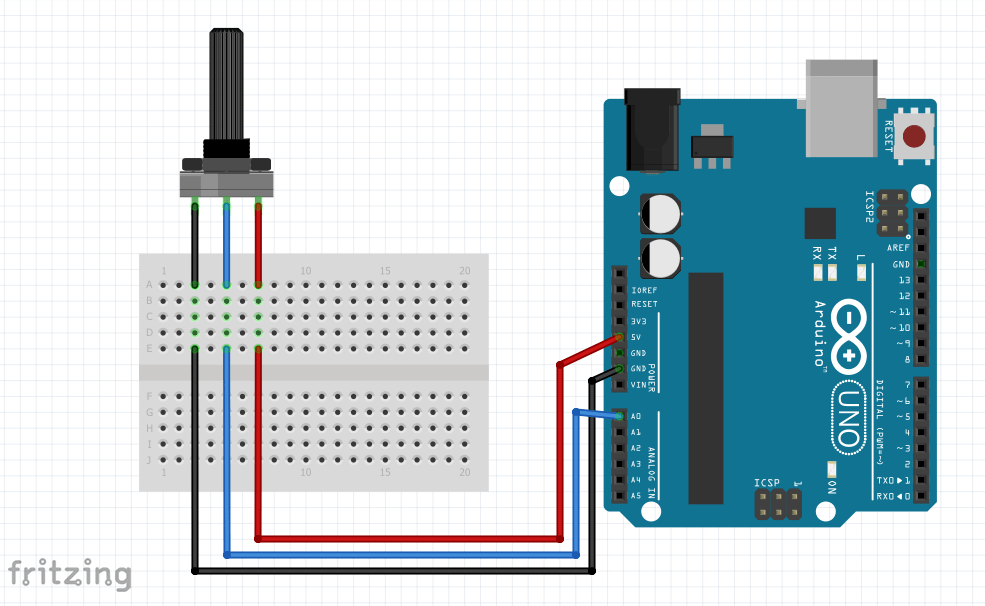
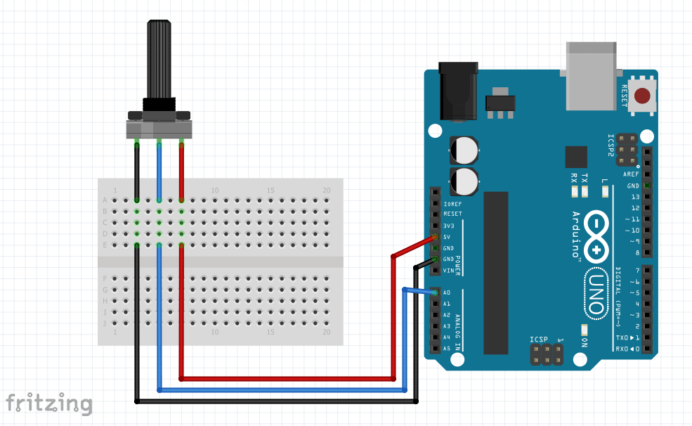
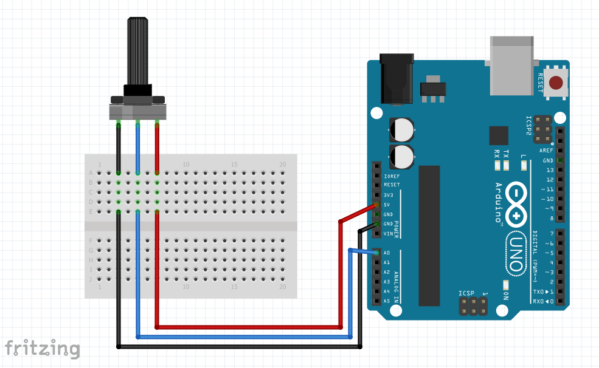

In this lab we use analog input from potentiometers and an analog joystick to more complexley interface with the Arduino board. This lab
culminates in the creation of a whack-a-mole game which involves controlling 4 LEDs with the game joystick.
Materials Used
All materials but the multimeter are sourced from the Elegoo Super Starter Kit UNO R3 Project Kit
Elegoo Uno R3 Controller Board
USB Cable
USB-C to USB-A Adapter
830 Tie-Points Breadboard
Breadboard Jumper Wire
Resistors
LEDS
Potentiometer 10k
Joystick Module
Multimeter
Part 1: Using a Potentiometer
The first task in the lab was to measure the analog output of a potentiometer. To do this, I wired the ground and 5V arduino pins to the outer terminals of the potentiometer.
I then wired the Arduino's A0 pin (an analog pin, also known as digital input 17) to the potentiometer's middle terminal to measure the voltage. Below is a photo of my circuit
and circuit diagram.

I then wrote a simple Arduino sketch to measure the analog input using the analogRead() function. The code is seen running in the video below.
Part 2: Light 'Em Up with a Potentiometer
To begin, I wired 5 LEDs in a row, each with it's own digital output control. This circuit is shown below.
Next, using the map() function, I mapped the analog input value of the potentiometer (0-1023) to the integers 0-6, which I then stored in a variable I named pos.
This range of 0-6 allowed me to have no LEDs on at 0, and all LEDs on at 5. The code is available here
and is shown in action in the below video.
Part 3: Joystick for Arduino
My wiring of the joystick is shown below.
To understand the analog behavior of the joystick, I printed the x and y analog readings to the console. The average values of both x (510) and y (518) when the joystick is centered
seems to be around 514. When the joystick is moved left, the y value is unchanged, and the x value goes to 0. When the joystick is moved to the right, the y value is again
unchanged, and the x value goes to 1023. When the joystick is moved up, the x value is unchanged, and the y value goes to 0. When the joystick is moved down, the x value is unchanged
and the y value goes to 1023. As for the four diagonal extreme positons, bottom left results in (0,1023), bottom right results in (1023, 1023), top right results in (1023, 0), and finally
top left results in (0,0). The code can be seen here and in action below.
Part 4: Light 'Em Up With a Joystick
To begin this section of the lab, I rearranged the LEDs into a + formation. This is shown below
The next step was to code it so that the LEDs would light up according to the position of the joystick. I accomplished this with the use of numerous if statements.
The code can be seen here and the result is shown below.
Part 5: Basic LED Whack-A-Mole
For the final part of the lab, we were tasked with creating a Whack-A-Mole game. As the circuitry has already been constructed, all that was needed was some
code. I chose to use a while loop to facilitate the 20 rounds which I did by
incrementing a variable called gameround every time I "solved" the round. I found I had to move my mapping functions into the innermost while loop of the game logic,
or else it wouldn't update. The code uses if statements with two conditionals, one that checks the position of the joystick, and the other checks if that corresponds
with the lit LED. Below is a video showing a round of the game.
Conclusion
I thought this was a good intermediate lab for coding with Arduino. Part 3 had me stumped for a while until I just used a bunch of if statements, which worked. I also
thought part 4 was a good way to tie up all the concepts into a fun exercise. Overall, I enjoyed this lab
and feel I have a better handle on Arduino
programming because of it.
 
